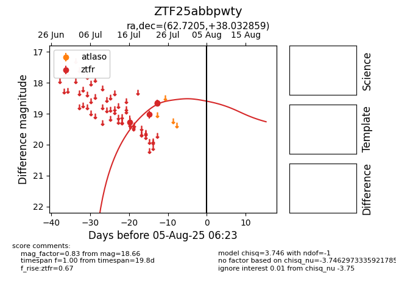

Target ZTF25abbpwty at 2025-08-05 07:33, see:
FINK: fink-portal.org/ZTF25abbpwty
Lasair: lasair-ztf.lsst.ac.uk/objects/ZTF25abbpwty
ALeRCE: alerce.online/object/ZTF25abbpwty
alt names
ZTF25abbpwty (ztf,fink)
coordinates:
equatorial (ra, dec) = (62.7205,+38.03286)
galactic (l, b) = (160.6045,-9.84375)
photometry
last ztfr=18.66
4 ztfr detections
